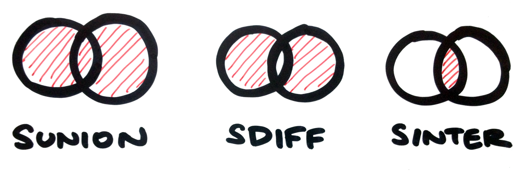

Povídání pro Tkalce na webu — Michal Valoušek — @msgre
https://github.com/msgre/redis-talk
Redis is an open source, BSD licensed, advanced key-value store. It is often referred to as a data structure server since keys can contain strings, hashes, lists, sets and sorted sets.
— Salvatore @antirez Sanfilippo
Memcached
Memcached
$memcache_obj = memcache_connect('memcache_host', 11211);
memcache_set($memcache_obj, 'var_key', 'some variable', 0, 30);
echo memcache_get($memcache_obj, 'var_key');
Memcached
set — add — replace — append — prepend
get — gets
incr — decr
delete — flush_all
Zamávejme memcached
Přivítejme Redis
Redis
on memory
key–value databáze
Redis
- datové typy
- transakce
- pub/sub protokol
- skriptování
- persistence
- replikace
Persistence
- RDB snapshoty
# save <seconds> <changes> save 900 1 save 300 10 save 60 10000 - AOF (append only files)
Replikace
Master – Slave
# SLAVEOF <IP> <PORT>
SLAVEOF 192.168.1.1 6379
Základní datové typy Redise
string — list — set — sorted set — hash
Datové typy Redise — string
- GET/SET
- APPEND
- INCR/DECR
- STRLEN
- ...
Datové typy Redise — string
Datové typy Redise — list
Datové typy Redise — list
Datové typy Redise — set
Datové typy Redise — set
Datové typy Redise — sorted set
Datové typy Redise — sorted set
Datové typy Redise — hash
Datové typy Redise — hash
Pojďme se ušpinit
Redis prakticky
- oficiální dokumentace redis.io/commands
- interaktivní výukové demo try.redis.io
- knihovny pro váš jazyk
Omezení web crawleru
(operace "SET if Not eXists" nad řetězci)
import redis
r = redis.Redis() # konexe na Redis (default na localhost:6379)
def count_requests():
key = 'crawler:requests'
count = 1
if r.setnx(key, count): # O(1)
r.expire(key, 60) # expirace po 60 vterinach, O(1)
else:
count = r.incr(key) # expirace se nemeni, O(1)
return count
# ... v kodu
if count_requests() > 10:
print 'Bez pryc'Logování aktivity
(bitové operace s řetězci, SETBIT & BITCOUNT)
Kdo se dneska přihlásil?
Kdo si dneska pustil aspoň jednu písničku?
Kolik se dnes stalo kritických chyb?

Uchování měsíční aktivity pro milión uživatelů představuje cca 4 MB
Logování aktivity
(bitové operace s řetězci, SETBIT & BITCOUNT)
import redis
r = redis.Redis()
def log_activity(day, user_id):
key = 'activity:%s' % day # klic ve tvaru "activity:2014-04-08"
r.setbit(key, user_id, 1) # O(1)
def count_activity(day):
key = 'activity:%s' % day
return r.bitcount(key) # O(N)
log_activity('2014-04-08', 2)
log_activity('2014-04-08', 147)
print count_activity('2014-04-08')
Jak zjistíme aktivitu za celý týden?
Capped log
(ořezávání délky listu, LTRIM)
import redis
r = redis.Redis()
LIMIT = 100
KEY = 'log' # klic ve tvaru "log"
def log_msg(msg):
r.lpush(KEY, msg) # O(1)
r.ltrim(KEY, 0, LIMIT-1) # O(N), N = pocet odebranych elementu
log_msg('dulezita log hlaska')
print r.lrange(KEY, 0, -1)
Operace nad množinama
(sjednocení SUNION, rozdíl SDIFF, průnik SINTER)

STORE varianty, např. SUNIONSTORE cil zdroj1 zdroj2
Jednoduchý reklamní systém
(náhodný výběr prvku z množiny, SRANDMEMBER)
import redis
r = redis.Redis()
r.sadd('ad', 'Na tkalce jezdi pulka Vsetina. Tak proc tu nejste vy?')
r.sadd('ad', 'Na tkalce jezdi pulka Mezrica. Tak proc tu nejste vy?')
r.sadd('ad', 'Na tkalce jezdi pulka Roznova. Tak proc tu nejste vy?')
r.sadd('ad', 'Na tkalce jezdi pulka republiky. Tak proc tu nejste vy?')
r.srandmember('ad') # O(1)
Tagování
(OR/AND/AND NOT s pomocí SUNION, SINTER, SDIFF)
import redis
r = redis.Redis()
r.sadd('tag:python', 'clanek-1', 'clanek-2', 'clanek-3')
r.sadd('tag:redis', 'clanek-2', 'clanek-6')
r.sunion('tag:python', 'tag:redis') # python OR redis
# clanek-1, clanek-2, clanek-3, clanek-6
r.sinter('tag:python', 'tag:redis') # python AND redis
# clanek-2
r.sdiff('tag:python', 'tag:redis') # python AND NOT redis
# clanek-1, clanek-3
Koho sledovat na Twitteru?
(SINTER nad množinami)
import redis
r = redis.Redis()
r.sadd('user:1:follows', '2', '3', '5')
r.sadd('user:2:follows', '3', '4', '5')
r.sadd('user:3:follows', '1', '5', '8', '12')
r.sadd('user:6:follows', '1', '2', '3')
def who_to_follow(user_id):
key = 'user:%s:follows'
fkeys = [key % i for i in r.smembers(key % user_id)]
return r.sinter(*fkeys) # O(N*M)
who_to_follow('6')
Kterého uživatele by měla "6" začít sledovat?
Seznam živých zařízení
(ZREVRANGEBYSCORE nad tříděnou množinou)
import redis, time
r = redis.Redis()
TIME_WINDOW = 60
def update_track(id):
r.zadd('devices', **{str(id):time.time()}) # O(log(N))
def live_devices(window=TIME_WINDOW):
t = time.time()
return r.zrevrangebyscore('devices', '+inf', t-window) # O(log(N)+M)
def death_devices(window=TIME_WINDOW):
t = time.time()
return r.zrevrangebyscore('devices', t-window, '-inf') # O(log(N)+M)
Nejstahovanější soubory
(ZINCRBY & ZREVRANGEBYSCORE nad tříděnou množinou)
import redis, datetime
r = redis.Redis()
def downloaded(path):
now = datetime.datetime.now()
r.zincrby('downloads:total', path) # O(log(N))
r.zincrby('downloads:%s' % now.strftime('%Y-%m-%d'), path) # O(log(N))
def get_top_files(date=None):
if date is None:
key = 'downloads:total'
else:
key = 'downloads:%s' % date.strftime('%Y-%m-%d')
return r.zrevrangebyscore(key, '+inf', '-inf', start=0, num=10) # O(log(N)+M)
Padla
HyperLogLog
Horká novinka na závěr
Počítání pasažérů v Amsterodamu
- NFC čipy s unikátním ID ve tvaru
96e4bfec-8cf5-4af1-9469-b7f0dc36dc29 - check-in při nástupu do vlaku/autobusu/metra
- check-out při jejich opuštění
HyperLogLog
PFADD buffer a b c d e f g # O(1), vrati 1
PFADD buffer d # vrati 0 (buffer se nezmenil)
PFCOUNT buffer # O(1), vrati 7
Velice úsporná datová stuktura (~12 kB), pojme 264 prvků
(18 quintiliónů), standard error 0.81%
Díky za pozornost
- http://redis.io
- http://www.slideshare.net/dvirsky/introduction-to-redis
- http://blog.getspool.com/2011/11/29/fast-easy-realtime-metrics-using-redis-bitmaps/
- https://geoloqi.com/blog/2011/09/building-a-real-time-location-based-urban-geofencing-game-with-socket-io-redis-node-js-and-sinatra-synchrony/
- http://oldblog.antirez.com/post/take-advantage-of-redis-adding-it-to-your-stack.html
- http://blog.mjrusso.com/2010/10/17/redis-from-the-ground-up.html
- http://www.slideshare.net/wooga/1000000-daily-users-and-no-cache-splash-2011
- http://blog.simonwillison.net/post/57956853793/redis
- http://blog.simonwillison.net/post/57956858672/redis
- http://www.slideshare.net/karmi/redis-the-ak47-of-postrelational-databases>